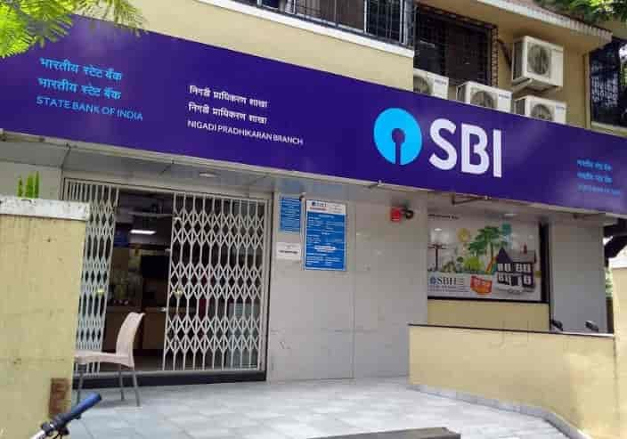

Our Branches in AP
| S.no | Branch Name | location | photo | view page |
|---|---|---|---|---|
| 1 | SBI Main Branch | Mumbai Main Branch: Mumbai Samachar Marg, Horniman Circle, Fort, Mumbai - 400023 | View | |
| 2 | SBI Vijayawada | SBI Vijayawada Branch:BRP Road, Beside H.P.O., Vijayawada, Andhra Pradesh - 520001. | View | |
| 3 | SBI Nuzvid | SBI Nuzvid Branch: Bank Street, near Venkateswara Swamy Temple Road, Nuzvid, Eluru District, Andhra Pradesh - 521201. |
View | |
| 4 | SBI Vissannapeta | SBI Vissannapeta Branch: D.No. 5-92, Vissannapeta-Sathupally Road, Vissannapeta, NTR District (formerly Krishna), Andhra Pradesh - 521215 |
 |
View |